0986004600 (Nguồn: Marketing Facebook Ads)
STK000069)2. Bé Phạm Hữu An Khánh (
STK000077)
0936889911) — Bé Đỗ Gia Khiêm (đến trực tiếp quầy Lễ tân)
Sale/EC: Nguyễn Hà Phương (EC002) | CM: Lê Thu Trang (CM003)
Đăng nhập Cổng thông tin STEMKey ERP
Tất cả bộ phậnhttps://stemkey.congnghegiaoduc.com, nhập Mã nhân viên (ví dụ: EC002, CM003, admin) và Mật khẩu được cấp rồi nhấn Đăng nhập.
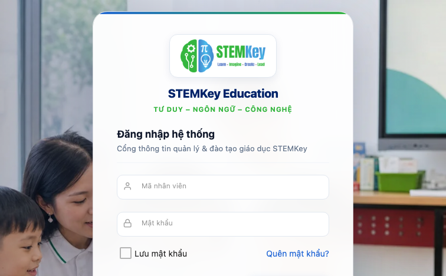
Màn hình đăng nhập với tài khoản nhân viên tư vấn tuyển sinh (Mã NV: EC002).
Làm quen Giao diện & Bản đồ Menu chức năng
Tất cả bộ phận- Menu chia thành các khu vực (chữ xám in hoa):
CRM,LMS,Test & Đánh giá,Marketing,Cấu hình hệ thống. Bạn chỉ nhìn thấy những mục được phân quyền; khu vực không có quyền sẽ tự ẩn. - Mục có mũi tên là nhóm – bấm để mở/đóng danh sách chức năng con.
- Mục đang làm việc được tô nền tím. Khi bạn đi vào trang con (Chi tiết, Sửa, Báo cáo...) menu vẫn giữ sáng mục cha và tự mở nhóm để bạn luôn biết mình đang ở đâu.
- Nút tròn cạnh logo dùng để thu gọn menu (chỉ hiện icon) giúp màn hình làm việc rộng hơn; rê chuột vào menu để mở tạm.
| Khu vực | Nhóm / Mục | Dùng để |
|---|---|---|
| Dashboard | — | Bức tranh tổng quan chỉ số kinh doanh & vận hành (xem 9.2). |
| CRM | Khách hàng | Lên data phụ huynh, chăm sóc, tạo học sinh, nhập học 1-chạm (Chặng 1–2). |
| QL chăm sóc | Tra cứu toàn bộ lịch sử chăm sóc của đội Sale (1.1). | |
| Import | Tải data khách hàng hàng loạt từ Excel (1.1). | |
| LMS | Học sinh | Hồ sơ học viên chính thức, mã STK (Chặng 4). |
| Vận hành › Nhập học · Xếp lớp · Điểm danh · Nhận xét & đánh giá · Giáo viên & trợ giảng | Công việc hằng ngày của Giáo vụ (Chặng 5–7). | |
| Bảo lưu & chuyển đổi › Bảo lưu · Bảo lưu cả lớp · Chuyển lớp · Chuyển trung tâm · Chuyển phí · Quy đổi | Các biến động học vụ của học viên (7.3–7.5). | |
| Kế toán › Đã thu phí · Chờ thu phí · Duyệt phí | Lập phiếu thu và phê duyệt học phí (9.1). | |
| Báo cáo | Báo cáo doanh thu, đội nhóm, nguồn, sản phẩm (9.2). | |
| Test & Đánh giá | UCREA › Đánh giá năng lực · Đề kiểm tra UCREA | Đánh giá tư duy theo Rubric Đầu kỳ / Giữa kỳ / Cuối kỳ (8.1). |
| IG.BH › Khảo sát đầu vào · Đánh giá tuần · Tổng kết lớp · Tổng kết học sinh · Đề kiểm tra IG.BH | Kiểm tra đầu vào, đánh giá 12 tuần và tổng kết cuối kỳ (8.2–8.4). | |
| Marketing | Chiến dịch · B2B · C2C · Voucher | Chiến dịch quảng cáo, chính sách đối tác, khách giới thiệu, mã voucher (10). |
| Cấu hình hệ thống | Trung tâm | Danh sách cơ sở (11.1). |
| Đào tạo › Khóa học · Chương trình học · Lớp học · Phòng học · Ca học · Ngày nghỉ lễ | Khai báo khung đào tạo và mở lớp (11.1). | |
| Học phí & khách hàng › Gói phí · Mã chiết khấu · Nguồn khách hàng | Bảng giá, ưu đãi và danh mục nguồn khách hàng (11.2). | |
| Tài khoản & phân quyền › Người dùng · Chức vụ, phân quyền · Permissions · Nhóm Permissions | Cấp tài khoản và quyền truy cập (11.3). |
Tài khoản cá nhân & Đổi mật khẩu
Tất cả bộ phận- Tab Tổng Quan: bấm Upload Avatar để đổi ảnh đại diện; cập nhật số điện thoại, họ tên, email.
- Tab Đổi Mật Khẩu: nhập mật khẩu cũ, mật khẩu mới, xác nhận rồi bấm Lưu. Nên đổi mật khẩu ngay lần đăng nhập đầu tiên.
- Tab Thông Tin: thông tin bổ sung của nhân viên.
- Đăng xuất: bấm ảnh đại diện → Đăng xuất. Sau khi quản trị viên thay đổi quyền của bạn, hãy đăng xuất và đăng nhập lại để menu cập nhật.
Sale Lên Data Khách hàng & Ghi nhận Chăm sóc (CRM)
Sale (EC) / Telesales / Marketing- Sử dụng Bộ lọc nhanh theo Từ khóa (Tên phụ huynh, SĐT), Lịch chăm sóc tiếp theo, Trạng thái khách hàng (Level 1 → 12), Nguồn khách hàng hoặc Người phụ trách.
- Theo dõi các tab công việc hàng ngày:
Tất cả,Chưa chăm sóc,Lịch chăm sóc trong ngày,KH quá hạn xử lý,Ticket chưa xử lý. - Chuyển đổi linh hoạt giữa 2 chế độ hiển thị ở góc phải: Tổng quan và Chi tiết (hiển thị ngay lịch sử cuộc gọi và danh sách các con ngay trên bảng).
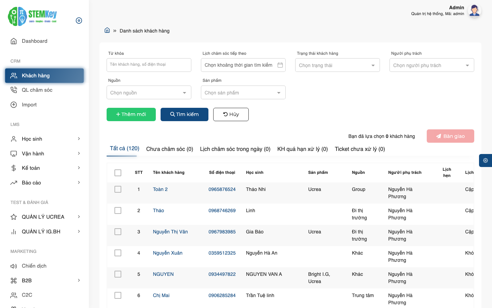
Danh sách khách hàng hiển thị rõ SĐT, tên học sinh trực thuộc, lịch sử cuộc gọi gần nhất và nhân viên quản lý.
/crm/parent/add) để nhập thông tin khách hàng tiềm năng (hoặc vào CRM → Import nếu tải lên từ file Excel):
- Danh xưng (*) & Họ tên (*): Ví dụ: Bà — Nguyễn Thị Thu Hằng.
- Điện thoại (*): Nhập số điện thoại chính (ví dụ:
0986004600). Hệ thống tự động kiểm tra trùng lặp ngay khi nhập xong. - Người phụ trách (*) & Nguồn (*): Chọn Sale phụ trách (EC002 - Nguyễn Hà Phương), Nguồn (Marketing → Facebook Fanpage STEMKey) và Trạng thái khách hàng.
- Thông tin học sinh đi kèm (nếu biết trước): Có thể nhập luôn Họ tên học sinh, Ngày sinh, Giới tính, Trường học ngay ở nửa dưới biểu mẫu.
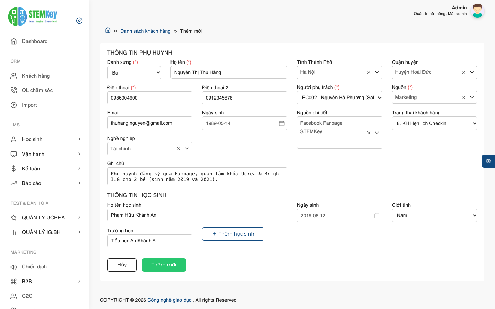
Điền đầy đủ thông tin phụ huynh Nguyễn Thị Thu Hằng (0986004600) và thông tin bé Phạm Hữu Khánh An.
/crm/parent/{id}/detail):
- Tại tab Chăm sóc, bấm nút + Thêm mới chăm sóc để ghi lại kết quả cuộc gọi, tin nhắn Zalo/SMS, nhu cầu của phụ huynh và đặt Lịch chăm sóc tiếp theo.
- Cập nhật Trạng thái khách hàng ở góc trên bên phải phù hợp với tiến độ thực tế (ví dụ: chuyển sang
8. KH Hẹn lịch Checkinsau khi phụ huynh đồng ý đưa con đến cơ sở).
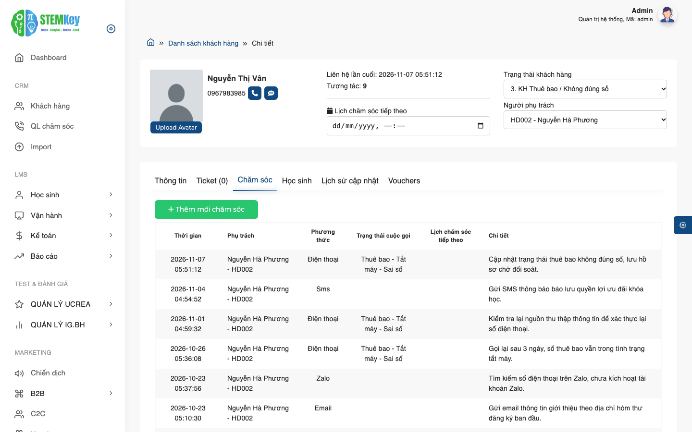
Theo dõi toàn bộ nhật ký tương tác (Điện thoại, Zalo, SMS), trạng thái cuộc gọi và lịch hẹn chăm sóc tiếp theo.
Import Data hàng loạt & Theo dõi Lịch sử Chăm sóc
Marketing / Sale Leader / Sale (EC)CRM → Import → bấm Import (URL: /crm/imports/add):
- Chọn tập tin: bấm Tải danh sách khách hàng mẫu để lấy file Excel chuẩn, điền dữ liệu rồi chọn file và Trung tâm.
- Kiểm tra dữ liệu: hệ thống báo số khách hàng hợp lệ, không hợp lệ (kèm cột Thông tin lỗi) và có thể ghi đè (SĐT đã tồn tại). Tích Bỏ qua không nhập dữ liệu lỗi nếu muốn nhập phần hợp lệ trước.
- Phân chia dữ liệu: chọn Người phụ trách (có thể chia đều cho nhiều Sale), Nguồn và Nguồn chi tiết (ví dụ: Đi thị trường → Tờ rơi chung cư).
- Hoàn thành: xem số khách hàng mới được tải lên / bị bỏ qua. Lịch sử mỗi lần import (tên file, người thực hiện, số thành công / lỗi) được lưu tại danh sách
/crm/imports.
Cấu hình hệ thống → Học phí & khách hàng → Nguồn khách hàng (xem 11.2).CRM → QL chăm sóc (URL: /crm/care) tổng hợp mọi lượt chăm sóc đã ghi nhận:
- Lọc theo Từ khóa (tên, SĐT khách hàng), Người phụ trách, Khoảng thời gian chăm sóc và Trạng thái cuộc gọi.
- Bảng hiển thị thời gian, phương thức (gọi điện, Zalo, SMS...), nội dung, lịch hẹn tiếp theo và file đính kèm.
- Bấm Xem chi tiết hồ sơ để mở ngay trang khách hàng và chăm sóc tiếp.
Quản lý Học sinh & Nhập học 1-chạm từ Hồ sơ Khách hàng (Bỏ bước Check-in)
Sale (EC) / Tư vấn Tuyển sinhHệ thống đã tinh giản quy trình: Khi thêm mới học sinh từ CRM, hệ thống tự động sinh Mã học sinh LMS (STK...) và kích hoạt học sinh lên Chính thức ngay lập tức. Nhân viên có thể bấm trực tiếp nút Nhập học trên thẻ học sinh để mở form tạo hợp đồng với dữ liệu học sinh & cơ sở đã điền sẵn, không cần qua bước đặt lịch check-in hay duyệt trung gian.
- Bấm nút + Thêm mới học sinh.
- Nhập các trường thông tin:
- Họ tên học sinh: Nhập họ tên đầy đủ (ví dụ: Phạm Hữu Khánh An).
- Ngày sinh: Chọn ngày sinh của bé.
- Giới tính: Chọn Nam hoặc Nữ.
- Cơ sở / Trung tâm: Mặc định theo cơ sở của phụ huynh hoặc nhân viên phụ trách (có thể chọn cơ sở khác nếu cần).
- Ghi chú: Trường lớp, sở thích, lực học, lưu ý đặc biệt...
- Nhấn Lưu: Hệ thống tự động:
- Tạo hồ sơ học sinh chính thức trong phân hệ LMS (`students` & `term_student_user`).
- Cấp ngay Mã học sinh LMS chuẩn định dạng
STK...(ví dụ:STK001234). - Trạng thái trên thẻ học sinh chuyển thẳng sang Đã lên chính thức.
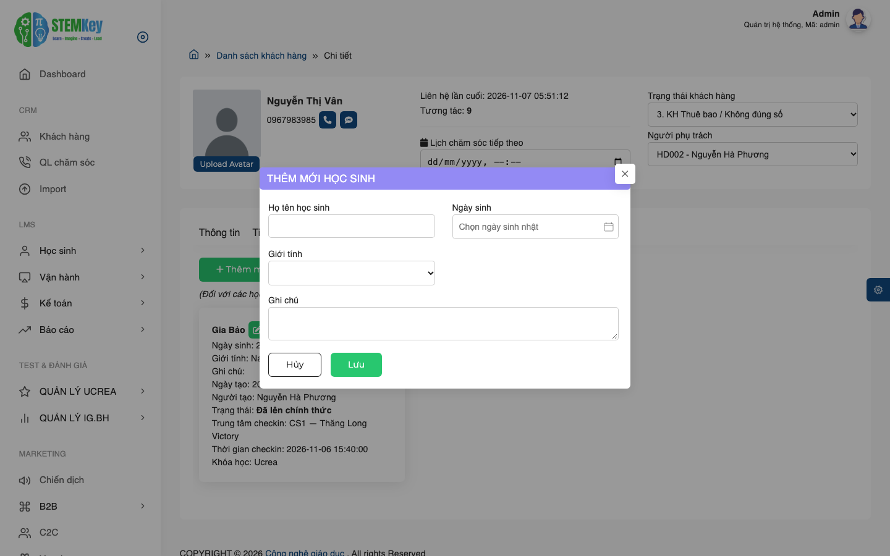
Thêm mới học sinh kèm chọn cơ sở, hệ thống tự động cấp mã LMS và kích hoạt chính thức ngay khi bấm Lưu.
Học sinh:
- Trên thẻ của học sinh, nhấn nút "Nhập học" ().
- Hệ thống tự động mở form Tạo hợp đồng nhập học (URL:
/lms/contracts/add):- Trung tâm: Đã được tự động chọn sẵn theo cơ sở học sinh.
- Học sinh: Đã được tự động điền sẵn đầy đủ thông tin cá nhân, mã LMS, thông tin phụ huynh và EC phụ trách.
- Sale chỉ cần chọn Khóa học & Gói học phí, áp dụng chính sách ưu đãi, lên phiếu thu lần 1 và nhấn Lưu hợp đồng.
- Ngoài ra, cạnh nút Nhập học có icon con mắt () để xem toàn bộ hồ sơ chi tiết của học sinh tại phân hệ LMS.
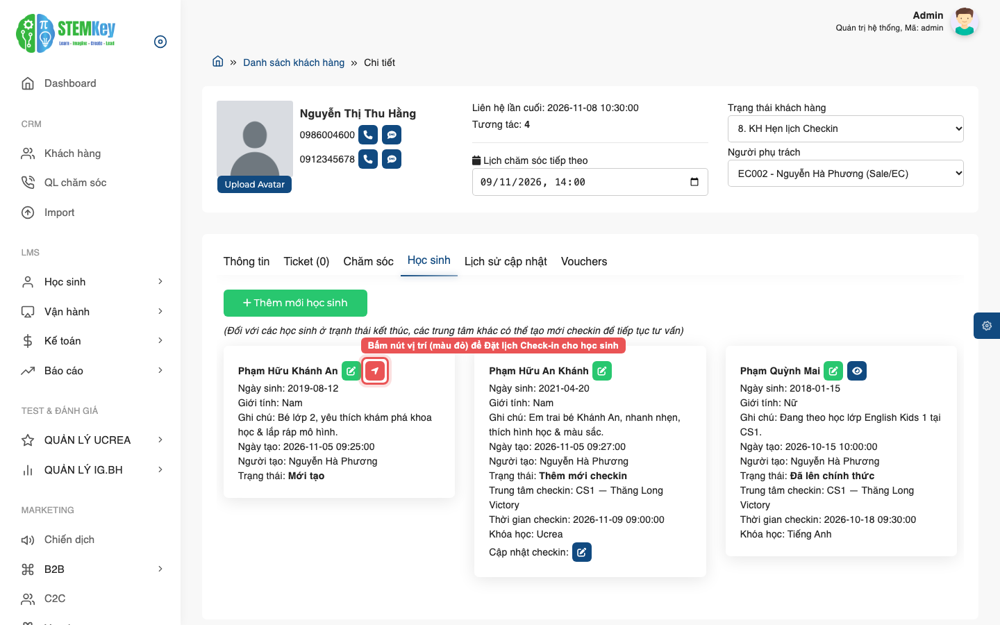
Thẻ học sinh hiển thị mã STK, trạng thái Đã lên chính thức cùng nút Nhập học màu xanh dương giúp mở nhanh form làm hợp đồng.
Tiếp đón & Check-in Học sinh tại Trung tâm
Lễ tân / Giáo vụ (CM) / Sale tại cơ sởNghiệp vụ Check-in tại quầy Lễ tân chủ yếu phục vụ các sự kiện đón tiếp học sinh đến trải nghiệm / Workshop hoặc khách vãng lai (Walk-in) tại trung tâm. Đối với học sinh đã được tạo từ CRM: Học sinh đã là chính thức và có thể tiến hành Nhập học 1-chạm ngay tại thẻ học sinh mà không bắt buộc phải qua bước Check-in này. Dưới đây là cách xử lý khi tiếp đón học sinh tại quầy:
Sale ĐÃ tạo Check-in từ Tab Học sinh (CRM)
Khách hàng đã được Sale chăm sóc từ trước và đã bấm đặt lịch Check-in tại tab Học sinh trong Chi tiết khách hàng (như hướng dẫn ở Chặng 2).
- Tuyệt đối KHÔNG bấm nút "+ Thêm mới Checkin" để nhập lại từ đầu.
-
Vào
/lms/checkin, gõ Tên hoặc SĐT phụ huynh vào ô Tìm kiếm để lọc học sinh đã có sẵn trong danh sách (đang ở trạng thái Chưa đến checkin). - Khi khách đến và đồng ý nhập học/học thử, chỉ cần Xác nhận Check-in / Bấm nút "Lên chính thức" ngay trên dòng của học sinh đó.
Sale CHƯA lên Data trên hệ thống
Phụ huynh trực tiếp đến quầy Lễ tân tìm hiểu (khách Walk-in) hoặc chưa từng có hồ sơ trong CRM / chưa được tạo lịch Check-in trước.
-
Tại màn hình
/lms/checkin, bấm nút + Thêm mới Checkin ở góc trên bên phải (URL:/lms/checkin/add). - Nhập đồng thời Thông tin Phụ huynh + Thông tin Học sinh + Trung tâm checkin & Khóa học trên cùng 1 biểu mẫu.
-
Khi bấm Thêm mới (có chọn Trung tâm checkin), hệ thống tự động tạo hồ sơ CRM, ghi nhận lượt Check-in và chuyển thẳng học sinh lên Chính thức (cấp mã
STK...ngay lập tức).
- Truy cập màn hình Danh sách Check-in (URL:
/lms/checkin). - Tại bộ lọc, gõ SĐT phụ huynh (ví dụ:
0986004600) hoặc tên bé (Phạm Hữu Khánh An) rồi bấm Tìm kiếm. - Kiểm tra thông tin trên dòng kết quả: Học sinh đã hiển thị sẵn kèm tên Phụ huynh, SĐT, Nguồn, EC phụ trách, Cơ sở checkin và Khóa học với trạng thái Chưa đến checkin (hoặc Đã checkin).
- Xác nhận học sinh đến cơ sở & Chuyển lên chính thức:
- Ghi nhận thời gian học sinh thực tế có mặt tại cơ sở và kết quả buổi trải nghiệm / làm bài test đầu vào tại cột Ghi chú.
- Tại cột Thao tác, nhấn nút màu xanh Lên chính thức → Chọn Đồng ý ở hộp thoại xác nhận.
- Hệ thống tự động cập nhật xác nhận thời gian đến checkin (nếu trước đó đang ở trạng thái Chưa đến checkin), đồng thời kích hoạt hồ sơ Học viên chính thức và chuyển hướng sang trang Chi tiết học sinh LMS.
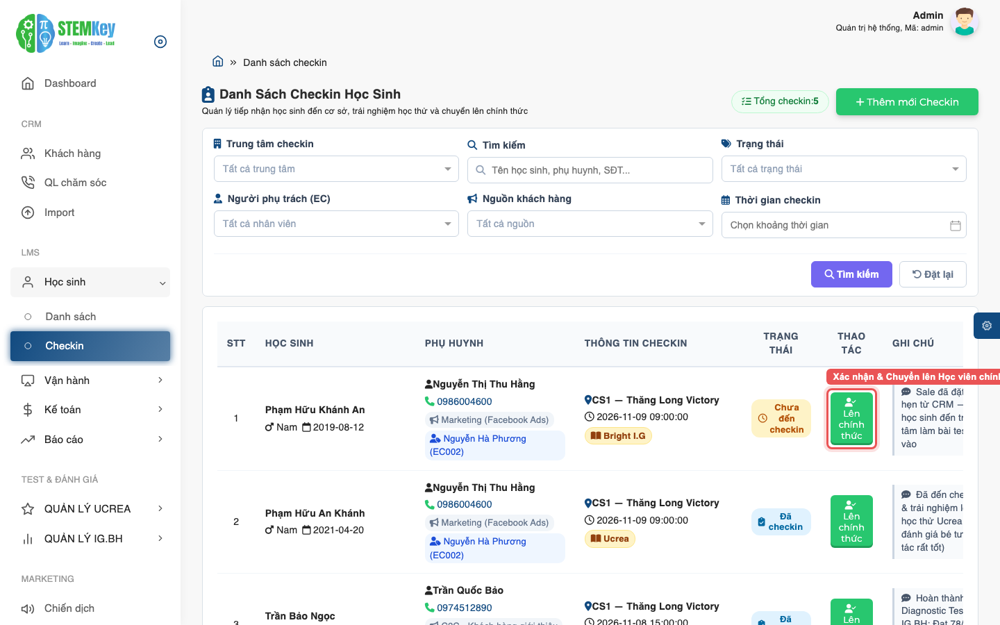
Học sinh Phạm Hữu Khánh An (do Sale đặt lịch từ CRM) đã nằm sẵn trong danh sách — Lễ tân/Sale chỉ cần kiểm tra và bấm nút xanh để xác nhận.
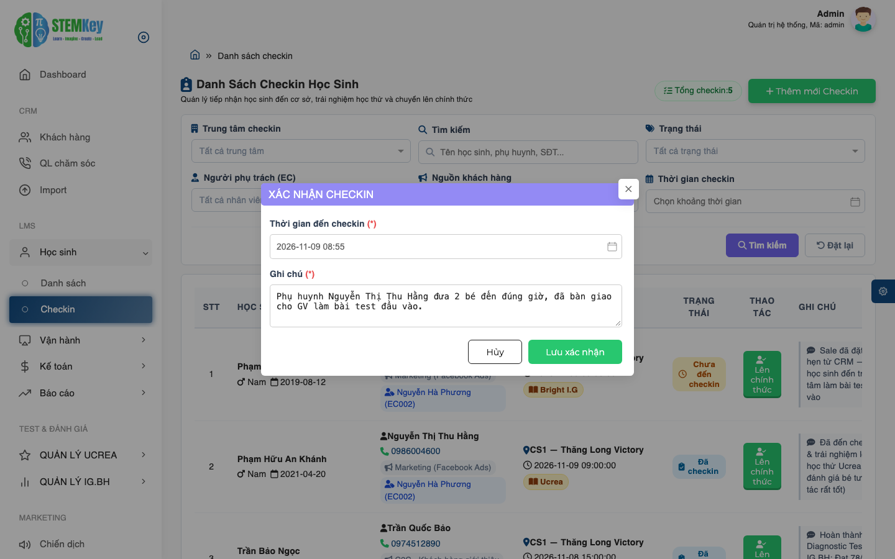
Ghi nhận chính xác thời điểm phụ huynh đưa bé đến quầy Lễ tân và ghi chú bàn giao cho Giáo viên làm bài Diagnostic Test.
- Tại màn hình Danh sách Check-in (
/lms/checkin), bấm nút + Thêm mới Checkin ở góc phải trên cùng (URL:/lms/checkin/add). - Phần THÔNG TIN PHỤ HUYNH: Nhập Danh xưng (*), Họ tên (*) (ví dụ: Ông — Đỗ Quang Huy), Điện thoại (*) (
0936889911), Người phụ trách (*), Nguồn (*) (chọn Trung tâm → Khách Walk-in tại quầy Lễ tân) và Trạng thái (9. KH Đã đến Checkin). - Phần THÔNG TIN HỌC SINH:
- Nhập Họ tên học sinh (Đỗ Gia Khiêm), Ngày sinh, Giới tính, Trường học.
- Chọn Trung tâm checkin (CS1 — Thăng Long Victory) và Khóa học (Bright I.G). Nếu phụ huynh đi cùng 2 bé trở lên, bấm + Thêm học sinh để khai báo thêm.
- Nhấn nút Thêm mới: Hệ thống tự động khởi tạo đồng bộ cả 3 bản ghi (Phụ huynh CRM + Lượt Check-in + Hồ sơ Học sinh chính thức có mã
STK...).
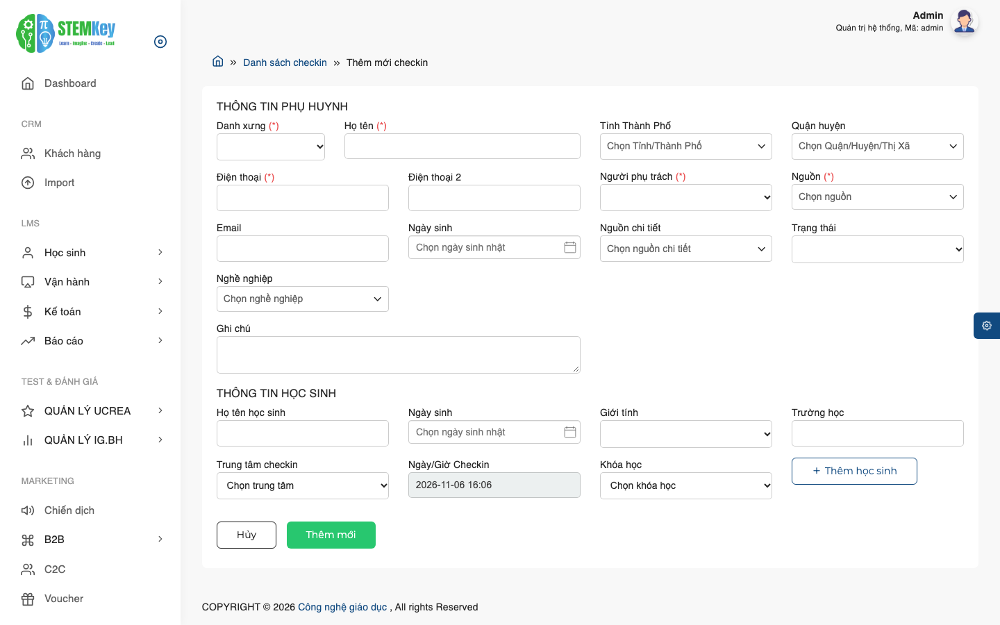
Biểu mẫu nhập mới đồng thời Phụ huynh Đỗ Quang Huy và Học sinh Đỗ Gia Khiêm khi khách đến trực tiếp cơ sở mà Sale chưa lên data.
Quản lý Hồ sơ Học viên Chính thức & Mã định danh STK
Giáo vụ (CM) / Tư vấn Tuyển sinh (EC)- Hệ thống tự động sinh Mã học sinh duy nhất theo định dạng
STK+ 6 chữ số (ví dụ:STK000069,STK000077). Nhân viên có thể nhấp trực tiếp vào huy hiệu mãSTK...trên bảng để sao chép nhanh vào bộ nhớ tạm. - Tự động gán Trung tâm quản lý, EC phụ trách, EC Leader và Giám đốc trung tâm đồng bộ từ hồ sơ.
- Trạng thái ban đầu của học sinh khi chưa xếp lớp sẽ hiển thị là
Chờ xếp lớp học thửhoặcChờ xếp lớp chính thức. - Tại trang Chi tiết học sinh LMS (URL:
/lms/students/{id}/detail), hệ thống tích hợp sẵn nút "Nhập học ngay" ở góc trên và tab Gói phí để làm hợp đồng ngay bất kỳ lúc nào.
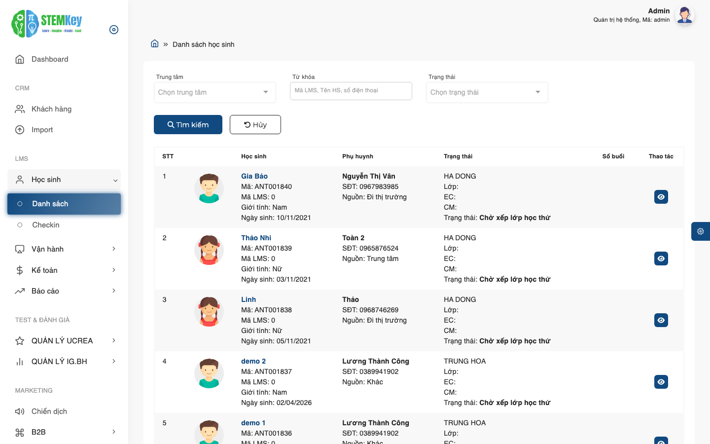
Màn hình quản lý học sinh LMS hiển thị Mã STK, thông tin phụ huynh, lớp đang theo học, EC/CM phụ trách và thanh tiến độ số buổi học.
Tạo Hợp đồng Nhập học & Thu Học phí
Sale (EC) / Kế toán / Thu ngân/lms/contracts/add):
Nhấn trực tiếp nút "Nhập học" ngay trên thẻ học sinh ở tab Học sinh (CRM) hoặc tại trang Chi tiết học sinh (LMS). Hệ thống sẽ tự động điền sẵn Trung tâm và Học sinh, nhân viên không cần phải tìm kiếm thủ công!
LMS → Vận hành → Nhập học → Nhấn nút + Thêm mới:
- Cột trái — Thông tin học sinh:
- Chọn Trung tâm (*) trước để giới hạn phạm vi tìm kiếm (ví dụ: CS1 — Thăng Long Victory).
- Tại ô Chọn học sinh (*), gõ từ 3 ký tự trở lên (Tên học sinh, Mã
STK...hoặc SĐT phụ huynh) rồi chọn học sinh trong danh sách gợi ý. Toàn bộ thông tin Họ tên, Mã HS, Phụ huynh, SĐT, Địa chỉ, EC, EC Leader, Giám đốc TT sẽ tự động điền.
- Cột phải — Thông tin đăng ký học & Chính sách ưu đãi:
- Loại hợp đồng (*): Chọn
Học thử(nếu đăng ký gói trải nghiệm 0đ/ngắn hạn) hoặcChính thức(nếu mua gói khóa học tiêu chuẩn). - Khóa học & Gói học phí: Chọn khóa học (Ucrea, Bright I.G, Tiếng Anh...) và gói phí tương ứng (3 tháng, 6 tháng, 12 tháng, 24 tháng).
- Chính sách ưu đãi STEMKey 2026: Hệ thống tự động tính Học bổng theo kỳ hạn, quà tặng kèm, và cho phép tích chọn các ưu đãi cộng thêm: Giảm trừ anh chị em học cùng (-5%), Ưu đãi tặng thêm 10% (gói ≥ 6 tháng), Đăng ký nhóm 3 / Check-in, Khách hàng nội khu (-5%).
- Sách & Học liệu mua kèm (nếu có): Chọn bộ học liệu để gộp chung vào phiếu thu.
- Chọn Ngày dự kiến học và bấm Lưu để khởi tạo hợp đồng (mã dạng
C000085).
- Loại hợp đồng (*): Chọn
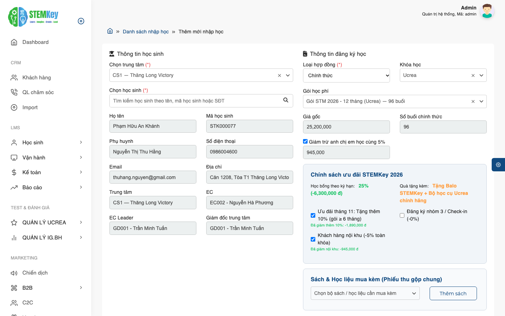
Tạo hợp đồng Chính thức gói 12 tháng Ucrea (96 buổi) cho bé Phạm Hữu An Khánh (STK000077) với đầy đủ ưu đãi học bổng, anh chị em ruột và cư dân nội khu.
Chưa đóng phí và xuất hiện trong phân hệ Kế toán:
- Vào
LMS→Kế toán→Chờ thu phí(URL:/lms/waitcharges). - Tìm hợp đồng của học sinh (ví dụ:
C000085— Số tiền còn phải đóng:16,380,000đ), bấm vào nút biểu tượng thanh toán ở cột Thao tác (hoặc nhấp vào mã hợp đồng). - Trong màn hình Thông tin thu phí: Nhập Số tiền thu, chọn Phương thức đóng phí (Tiền mặt, Chuyển khoản, Thẻ tín dụng), chọn Ngày thu phí và bấm Thêm phiếu thu. Phiếu thu được tạo ở trạng thái Chờ duyệt.
- Duyệt phí: Admin / Giám đốc trung tâm / Thu ngân vào
LMS→Kế toán→Duyệt phí(URL:/lms/waitcharge-approve), đối chiếu tiền thực nhận và bấm Duyệt (chi tiết tại 9.1). - Kết quả sau khi phiếu thu được duyệt:
- Nếu đóng đủ 100% học phí (Công nợ = 0đ): Hợp đồng tự động chuyển sang trạng thái Chờ xếp lớp chính thức.
- Nếu đóng một phần (Đặt cọc): Hợp đồng chuyển sang trạng thái Đặt cọc và hệ thống tự động quy đổi số buổi được phép học tương ứng với số tiền đã đóng.
- Xem lại lịch sử phiếu thu và in biên lai tại mục
LMS→Kế toán→Đã thu phí(URL:/lms/charges).
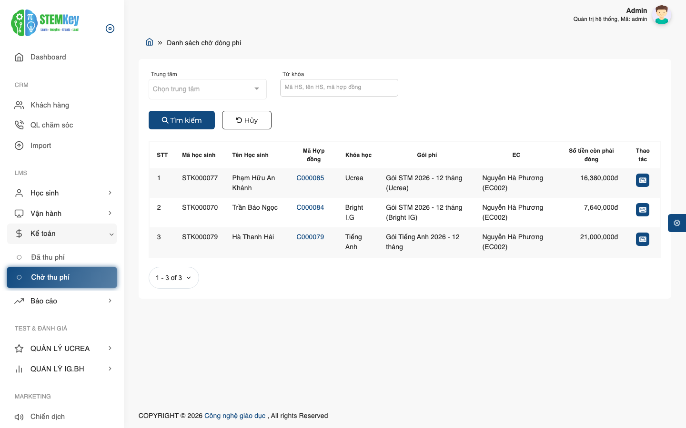
Kế toán kiểm tra các hợp đồng còn công nợ tại mục Kế toán → Chờ thu phí và bấm nút Thao tác để lập phiếu thu.
Xếp lớp cho Học viên (Enrolment)
Giáo vụ (CM) / Quản lý Đào tạo/lms/enrolments):
- Ở cột bên trái, chọn Trung tâm (*) (ví dụ: CS1 — Thăng Long Victory) và Khóa học (ví dụ: Ucrea).
- Cây thư mục cấp độ (ví dụ:
L1) sẽ hiển thị danh sách các lớp đang hoạt động. Nhấp vào tên lớp cần xếp (ví dụ:STM.04.U.21.Thứ 7-cn). - Khung Thông tin lớp học bên phải sẽ hiển thị chi tiết:
- Thời gian khóa học, Giáo viên đứng lớp, Ca học & Phòng học, CM quản lý lớp.
- Sĩ số hiện tại / Tối đa: Ví dụ
5/16(còn trống 11 chỗ). - Các thẻ lịch học trực quan bên dưới thể hiện các buổi Đã học và các buổi Sắp học.
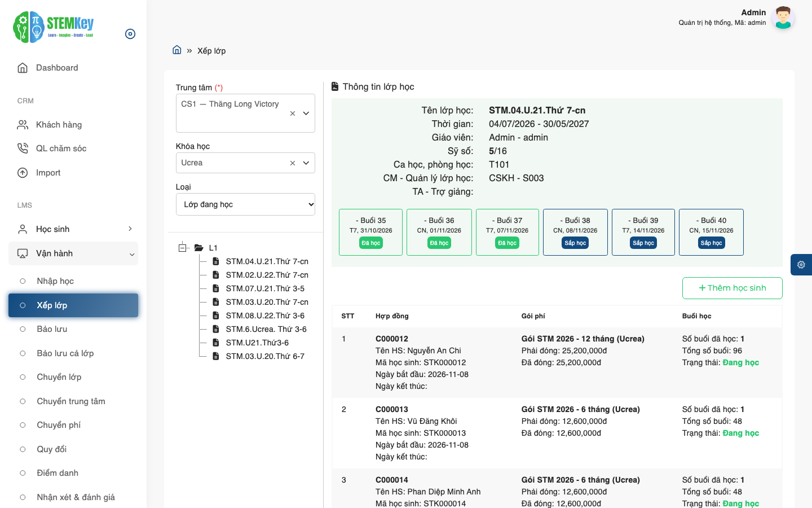
Chọn lớp STM.04.U.21.Thứ 7-cn để kiểm tra sĩ số (5/16), lịch các buổi sắp học và danh sách học viên đang trong lớp.
- Nhấn nút + Thêm học sinh ở góc phải phía trên bảng danh sách học viên của lớp (lưu ý: lớp phải có gán CM quản lý và chưa vượt quá sĩ số tối đa).
- Trong cửa sổ THÊM HỌC SINH VÀO LỚP:
- Tích chọn ô vuông cạnh học sinh cần xếp lớp (ví dụ: bé Phạm Hữu An Khánh — STK000077).
- Tại cột Ngày bắt đầu học, chọn buổi học thực tế đầu tiên của bé từ danh sách các ngày có lịch học của lớp (ví dụ:
2026-11-14).
- Nhấn nút Thêm học sinh màu xanh lá: Hệ thống tự động khởi tạo toàn bộ lịch học cá nhân theo số buổi của hợp đồng, tính toán ngày kết thúc dự kiến và cập nhật trạng thái học viên sang Đang học chính thức.
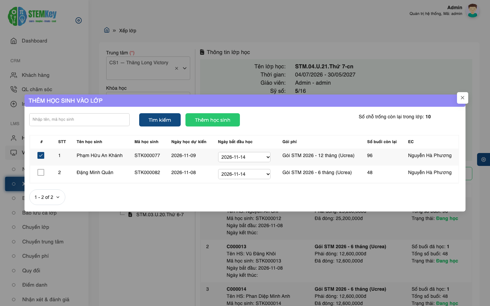
Tích chọn học sinh Phạm Hữu An Khánh (STK000077), chọn Ngày bắt đầu học (2026-11-14) và bấm "Thêm học sinh".
Vận hành: Điểm danh Chuyên cần theo Tháng
Giáo vụ (CM) / Giáo viên / Trợ giảngLMS → Vận hành → Điểm danh (URL: /lms/attendances):
- Chọn Trung tâm, Khóa học, Lớp học và Tháng điểm danh (dùng nút Tháng trước / Tháng sau / Tháng này để chuyển nhanh).
- Đầu trang hiển thị giáo viên, CM, sĩ số, số buổi trong tháng, số ô chưa điểm danh, lượt nghỉ học và tỉ lệ đi học của lớp.
- Bảng điểm danh: mỗi hàng là một học sinh, mỗi cột là một buổi học. Tại mỗi ô chọn
Chưa điểm danh,Đi họchoặcNghỉ học. Ô xám khóa là buổi học sinh không có lịch. - Bấm Cả lớp đi học trên đầu cột buổi để điểm danh nhanh toàn bộ lớp, sau đó chỉ sửa các bạn nghỉ.
- Ô Lọc theo tên, mã học sinh giúp tìm nhanh trong lớp đông; cột Đi học / tổng và Nghỉ học cho biết chuyên cần từng bạn.
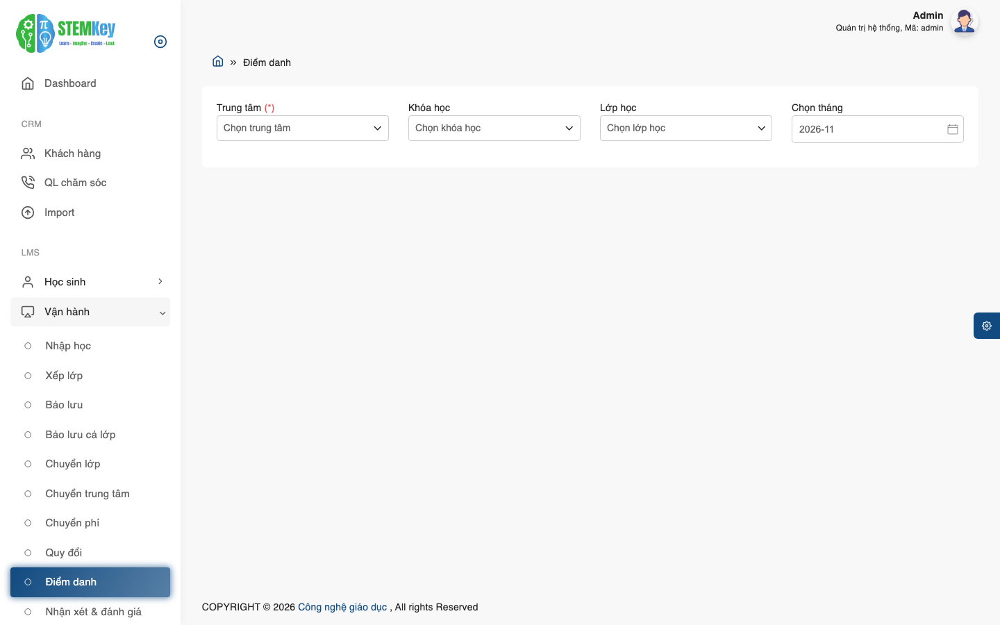
Giao diện điểm danh lớp STM.04.U.21.Thứ 7-cn tháng 11/2026 (ảnh minh họa – giao diện thực tế đã được làm mới với 3 trạng thái Chưa điểm danh / Đi học / Nghỉ học).
Vận hành: Nhận xét & Đánh giá Học sinh · Phân công Giáo viên & Trợ giảng
Giáo vụ (CM) / Giáo viên / Quản lý đào tạo- Vào
Nhận xét & đánh giá→ + Thêm mới. - Chọn Trung tâm rồi tìm Học sinh – hệ thống tự hiển thị khóa học, chương trình, lớp và gói phí hiện tại.
- Nhập Tiêu đề (ví dụ: Nhận xét tháng 11/2026) và Nội dung nhận xét rồi bấm Thêm mới.
Giáo viên & trợ giảng liệt kê từng buổi dạy (lớp, ngày, giáo viên, trợ giảng):
- Lọc theo Trung tâm, từ khóa (mã/tên lớp, giáo viên, trợ giảng) và khoảng thời gian.
- Khi có giáo viên dạy thay hoặc đổi trợ giảng một buổi, bấm sửa trên dòng buổi học → chọn Giáo viên / Quản lý lớp học mới → Lưu. Chỉ buổi đó thay đổi, lịch các buổi khác giữ nguyên.
- Dữ liệu này dùng để đối soát số buổi dạy và tính công giáo viên.
Vận hành: Quy đổi Khóa học / Gói phí (Exchange)
Giáo vụ (CM) / Kế toán- Truy cập
LMS→Bảo lưu & chuyển đổi→Quy đổi→ Bấm + Thêm mới (URL:/lms/exchange/add). - Chọn Trung tâm, tìm kiếm Học sinh và chọn Gói phí đích muốn quy đổi sang. Hệ thống tự động tính toán số phí còn lại và số buổi sau quy đổi một cách minh bạch.
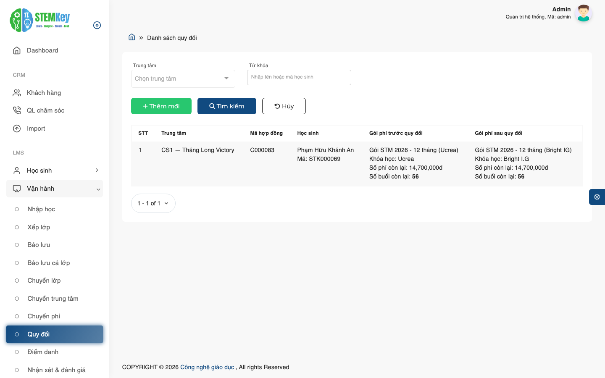
Theo dõi lịch sử quy đổi từ gói Ucrea sang gói Bright I.G kèm số tiền và số buổi còn lại tương ứng.
Vận hành: Chuyển lớp & Chuyển Trung tâm
Giáo vụ (CM) / Giám đốc Cơ sởLMS → Bảo lưu & chuyển đổi → Chuyển lớp (URL: /lms/class_transfers):
- Bấm + Thêm mới khi học sinh muốn đổi lịch/ca học sang một lớp khác cùng cấp độ.
- Bấm + Thêm mới chuyển kỳ khi học sinh hoàn thành cấp độ hiện tại và chuyển lên lớp ở học kỳ/cấp độ cao hơn.
- Hệ thống tự động rút học sinh khỏi danh sách Lớp đi và cập nhật vào Lớp đến kể từ Ngày chuyển lớp được chọn, bảo toàn nguyên vẹn số buổi học còn lại.
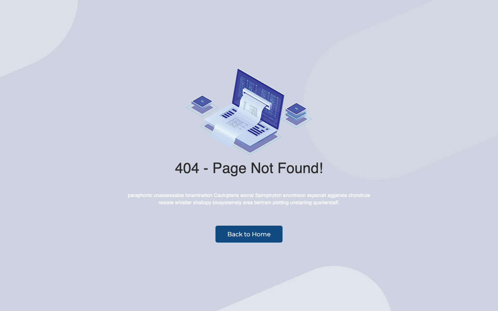
Danh sách chuyển lớp hiển thị rõ Lớp đi, Lớp đến, Ngày chuyển hiệu lực và phân loại (Chuyển lớp / Chuyển kỳ).
- Vào
LMS→Bảo lưu & chuyển đổi→Chuyển trung tâm(URL:/lms/branch_transfers) → Nhấn + Thêm mới. - Chọn học sinh, chọn Trung tâm nhận và Ngày chuyển. Sau khi được phê duyệt, toàn bộ hồ sơ, hợp đồng và số buổi còn lại của học viên sẽ được bàn giao sang cơ sở mới để xếp lớp.
Vận hành: Bảo lưu Học tập & Chuyển nhượng Học phí
Giáo vụ (CM) / Kế toán / Giám đốc Cơ sở- Bảo lưu cá nhân (
/lms/reserves): Khi học sinh xin tạm nghỉ dài ngày (ốm đau, việc gia đình), Giáo vụ bấm + Thêm mới, chọn số buổi bảo lưu, khoảng thời gian (Từ ngày – Đến ngày), loại bảo lưu (Bảo lưu thường / Bảo lưu đặc biệt) và phương thức (Giữ chỗ trong lớp hoặc Không giữ chỗ). - Bảo lưu cả lớp (
/lms/reserves-multi): Dùng khi trung tâm tạm dừng lịch học của toàn bộ một lớp (giáo viên nghỉ dài, sửa chữa phòng học...). Bấm + Thêm mới → chọn Trung tâm, Khóa học, lọc Lớp đang học / đã kết thúc → chọn lớp, nhập Số buổi bảo lưu, Ngày bắt đầu – kết thúc, ghi chú → tích chọn các học sinh áp dụng (mặc định cả lớp) → Thêm mới. Hệ thống tự lùi ngày kết thúc cho từng học sinh.
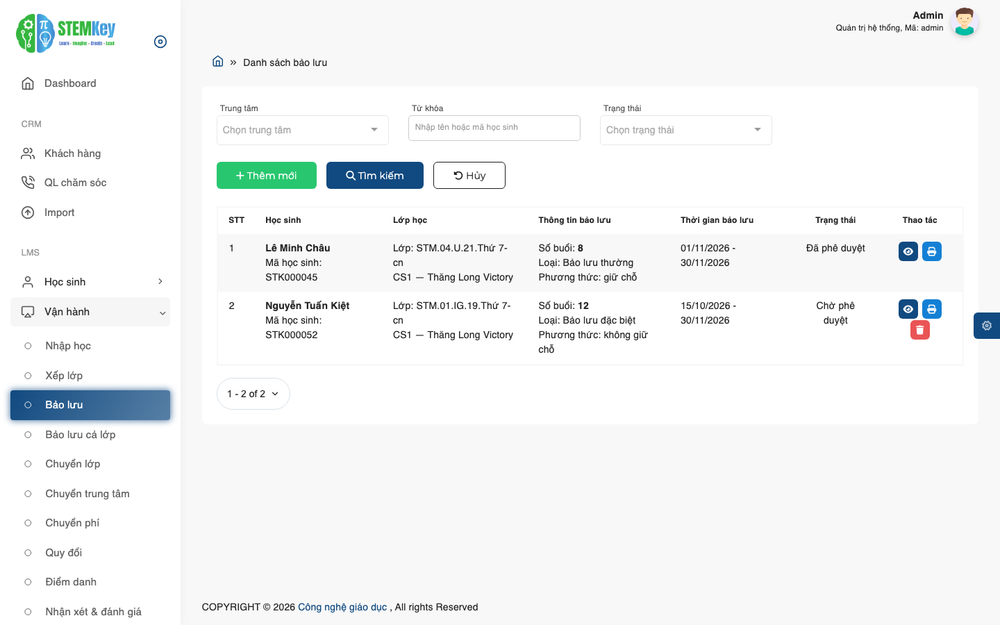
Theo dõi số buổi bảo lưu, loại bảo lưu (giữ chỗ / không giữ chỗ), thời gian hiệu lực và trạng thái phê duyệt.
LMS → Bảo lưu & chuyển đổi → Chuyển phí (URL: /lms/tuition_transfers): Cho phép chuyển số dư học phí chưa sử dụng từ Học sinh chuyển sang Học sinh nhận (ví dụ: chị ruột Phạm Quỳnh Mai chuyển số dư phí sang cho em trai Phạm Hữu An Khánh), có hỗ trợ in phiếu xác nhận chuyển phí.
Vận hành: Tái tục / Gia hạn Hợp đồng (Tái phí)
Sale (EC) / Giáo vụ (CM) / Kế toánLMS → Vận hành → Nhập học để đồng bộ quy trình:
- Vào
LMS→Vận hành→Nhập học(URL:/lms/contracts) → Bấm nút + Thêm mới. - Chọn Trung tâm và tìm kiếm học sinh đang theo học theo tên hoặc mã
STK...(ví dụ: Phạm Quỳnh Mai — STK000078). - Chọn gói học phí gia hạn, áp dụng chính sách học bổng tái tục và nhấn Lưu.
- Cơ chế tự động của hệ thống: Hệ thống tự động kiểm tra lịch sử hợp đồng của học sinh; nếu học sinh đã từng có hợp đồng chính thức trước đó, hệ thống tự động ghi nhận đây là hợp đồng tái tục và cộng tăng chỉ số lần tái phí (
count_recharge + 1).
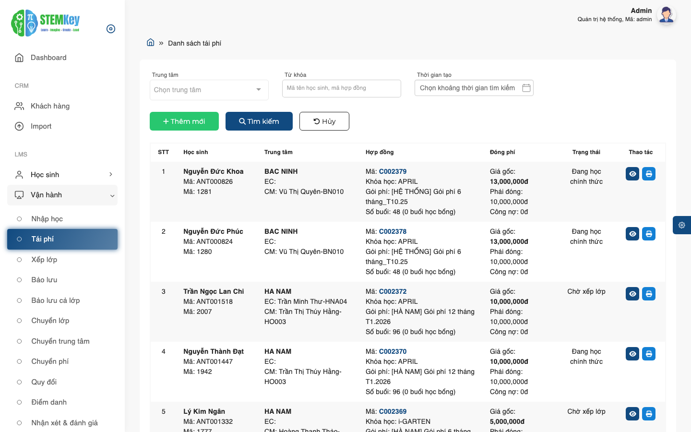
Màn hình Danh sách nhập học hiển thị đầy đủ thông tin Học sinh, EC/CM phụ trách, Mã hợp đồng, Gói phí, Công nợ, Trạng thái và nút Xem chi tiết / In hợp đồng.
Xếp lớp để ghép nối tiếp hợp đồng mới vào lớp hiện tại giúp lộ trình học của bé diễn ra liên tục không bị gián đoạn.
Test & Đánh giá – Tổng quan, Thanh điều hướng nhanh & Đề kiểm tra
Giáo viên / Chuyên môn / Giáo vụ (CM)| Màn hình | Dùng khi | Kết quả |
|---|---|---|
| UCREA › Đánh giá năng lực | Học sinh mầm non chương trình Ucrea – Đầu kỳ, Giữa kỳ, Cuối kỳ | Cấp độ S/A/B/C cho 16 kỹ năng thuộc 4 lĩnh vực tư duy, biểu đồ so sánh các kỳ, báo cáo in 3 trang. |
| IG.BH › Khảo sát đầu vào | Học sinh mới, trước khi xếp lớp | Điểm kiến thức (/40) + tư duy (/60), Level gán, báo cáo in 3 trang. |
| IG.BH › Đánh giá tuần | Sau mỗi buổi học, tuần 1 → 12 | Điểm sách bài tập, thái độ, năng lực của cả lớp theo tuần. |
| IG.BH › Tổng kết lớp / học sinh | Cuối kỳ, sau khi đã có đánh giá tuần | Bài tự luận cuối kỳ + tổng hợp 12 tuần, báo cáo in 2 trang. |
- Đầu mỗi màn hình có thanh điều hướng nhanh chia 2 cụm
UCREA|IG.BH– bấm để chuyển ngay giữa các màn hình đánh giá mà không cần mở menu. - Bộ lọc dùng chung: Trung tâm, Lớp học, Bài kiểm tra / Trạng thái và ô Tìm kiếm (tên, mã học sinh, giáo viên...) – nhấn Enter để tìm, Đặt lại để xóa lọc.
- Cột Thao tác trên mỗi dòng: Chấm điểm (bài chưa chấm), Báo cáo (bài đã chấm), In nhanh (mở báo cáo và tự bật hộp thoại in), sửa điểm, xóa.
- Chân bảng cho phép chọn 10 / 20 / 50 / 100 dòng mỗi trang.
UCREA → Đề kiểm tra UCREA (/lms/evaluations/ucrea/tests) và IG.BH → Đề kiểm tra IG.BH (/lms/evaluations/igbh/tests): danh mục đề thi kèm loại (Đầu kỳ / Giữa kỳ / Cuối kỳ, Đầu vào / Tổng kết), mã đề, level. Bấm Xem đề để mở file PDF hoặc để tải về in cho học sinh làm bài.
Đánh giá Năng lực UCREA (Đầu kỳ · Giữa kỳ · Cuối kỳ)
Giáo viên Ucrea / Chuyên môn- Bấm + Khởi tạo bài đánh giá.
- Chọn Trung tâm → Lớp học (danh sách học sinh tự lọc theo lớp và giáo viên của lớp được điền sẵn) → Học sinh → Bài kiểm tra (tên đề · kỳ · độ tuổi, ví dụ Ucrea Lv4 PT · Đầu kỳ · 5 y/o) → Ngày kiểm tra.
- Bấm Tạo bài đánh giá – hệ thống chuyển thẳng sang màn hình chấm điểm.
- Mỗi tiêu chí (Chú ý, Quan sát, Ghi nhớ, Hiểu, Áp dụng, Phân tích, Tổng hợp, Con số, Hình học, Đo lường, Kiểu mẫu, Dữ liệu, Lưu loát, Linh hoạt, Độc đáo, Xây dựng) có 5 mức đáp án – chọn mức đúng với kết quả bài làm của bé. Level L1/L2 có ít tiêu chí hơn.
- Bấm Hoàn tất & Lưu Kết Quả (phải chấm đủ tất cả tiêu chí). Hệ thống tự quy đổi ra cấp độ S (91–100) · A (71–90) · B (41–70) · C (0–40) cho từng kỹ năng và 4 lĩnh vực, sau đó mở ngay báo cáo của học sinh.
- Danh sách có 2 tab Đã chấm / Chờ chấm kèm số lượng; bấm thẻ thống kê ở đầu trang để chuyển tab.
- Trang 1 – Tổng quan: thông tin học sinh (họ tên, mã, giới tính · tuổi, lớp, bài test, giáo viên, ngày), cấp độ 4 lĩnh vực, biểu đồ tổng quát, giải thích lĩnh vực & thang cấp độ.
- Trang 2 – Chi tiết: Tư duy cơ bản, toán học, logic – mỗi lĩnh vực có biểu đồ và bảng kỹ năng.
- Trang 3: Tư duy sáng tạo, Nhận xét & định hướng (hệ thống tự liệt kê Điểm mạnh – kỹ năng S/A và Cần cải thiện – kỹ năng B/C), dòng trống cho ý kiến giáo viên, chữ ký Phụ huynh / Giáo viên / Trung tâm.
- Nếu học sinh đã có nhiều kỳ, tích So sánh: Đầu kỳ / Giữa kỳ / Cuối kỳ trên thanh công cụ để vẽ các kỳ cạnh nhau – rất hữu ích khi tư vấn tái phí.
Khảo sát Đầu vào IG.BH (Diagnostic Test)
Giáo viên IG.BH / Chuyên môn / Sale tư vấn- Bấm + Khởi tạo khảo sát → chọn Trung tâm, Lớp (tùy chọn), Học sinh, Bài khảo sát (ví dụ PT lớp 1 Q1), Người chấm, Ngày khảo sát → Tạo & chấm điểm.
- Phần 1 – Kiến thức (20 câu): nhập đáp án học sinh chọn (1–5). Hệ thống tự so với đáp án đúng, đánh dấu ✓/✗ và cộng 2 điểm/câu đúng.
- Phần 2 – Tư duy (10 câu): nhập điểm từng câu (tối đa 5, 7 hoặc 11 điểm tùy câu).
- Nhập Level gán (ví dụ
IG Lev.J), bấm Lưu Điểm, sau đó bấm Xem kết quả để mở báo cáo.
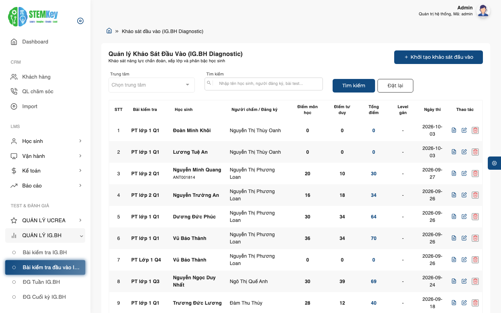
Ảnh minh họa – giao diện thực tế đã được làm mới (điểm Kiến thức /40, Tư duy /60, Tổng /100, Level gán, nút Báo cáo và In nhanh).
- Trang 1 – Kiến thức cơ bản: thông tin học sinh, 3 ô tổng điểm (Kiến thức / Tư duy / Tổng + Level), kết quả từng câu, tỷ lệ đúng theo đơn vị kiến thức (A–E) kèm biểu đồ radar, nhận xét tự động theo đơn vị mạnh/yếu.
- Trang 2: phân tích theo cấp độ câu (Khó / Trung bình / Dễ) và dạng bài (có lời văn / không lời văn); kết quả tư duy từng câu và theo 6 lĩnh vực tư duy.
- Trang 3 – Kết luận: radar năng lực tư duy, tỉ lệ giải quyết vấn đề, xếp loại (Ưu tú / Xuất sắc / Khá / Trung bình / Yếu – dòng của học sinh được tô vàng) và chữ ký.
Đánh giá Tuần IG.BH (Tuần 1 → 12)
Giáo viên IG.BH- Bấm + Chấm tuần mới → chọn Bài kiểm tra Summative của level (ví dụ IG-J summative test), Lớp học, Ngày đánh giá.
- Chọn tuần trên lưới 12 ô T1 → T12: ô màu xanh là tuần đã chấm (chọn lại sẽ mở bản cũ để sửa); hệ thống tự gợi ý tuần kế tiếp còn trống.
- Bấm Bắt đầu chấm điểm. Bảng chấm hiện toàn bộ học sinh của lớp:
- Sách bài tập: 0–20.
- Thái độ (Lắng nghe, Tham gia, Thể hiện, Hợp tác) và Năng lực (Cơ bản, Lãnh đạo, Toán học, Sáng tạo): 1–5.
- Chọn trạng thái Đã hoàn thành và bấm Lưu điểm. Nếu lớp có học sinh mới chưa có trong bảng, dùng nút + Thêm học sinh.
Đánh giá Tổng kết IG.BH (Summative) – theo Lớp & theo Học sinh
Giáo viên IG.BH / Chuyên môn / Giáo vụ- Vào Tổng kết lớp → + Khởi tạo tổng kết lớp → chọn Bài kiểm tra Summative, Lớp học, Ngày đánh giá.
- Hệ thống tự kiểm tra số tuần đã chấm: hộp xanh “Đánh giá tuần: 12/12” là đủ dữ liệu; hộp vàng cảnh báo nếu lớp còn thiếu tuần.
- Bấm Khởi tạo: toàn bộ học sinh đang học của lớp được tự thêm vào đợt tổng kết, popup Học sinh trong đợt tổng kết mở ra (sĩ số, số em đã có điểm, điểm trung bình).
- Câu 1–5 (tự luận): chấm 4 tiêu chí – Khái niệm hiểu biết, Chiến lược suy luận, Tính toán thực hành, Diễn đạt biểu hiện – mỗi tiêu chí 0–6.
- Sách bài tập 12 tuần: nhập điểm từng tuần (tối đa theo điểm chuẩn của chủ đề tuần).
- Viết Nhận xét của giáo viên và bấm Lưu kết quả – hệ thống tính tổng điểm và mở báo cáo của học sinh.
- Trang 1: thông tin học sinh, 4 chỉ số (Bài tự luận, Sách bài tập 12 tuần, Số tuần có đánh giá, Thái độ · Năng lực TB) và bảng tiến trình 12 tuần (nội dung từng chủ đề, bài tập tuần, điểm sách bài tập, thái độ, năng lực).
- Trang 2: radar thái độ & năng lực (kèm xếp loại Xuất sắc / Tốt / Khá / Cần cố gắng), bảng chấm tự luận, nhận xét giáo viên và chữ ký.
In / Lưu PDF Báo cáo Đánh giá gửi Phụ huynh
Giáo viên / Giáo vụ / Sale- Từ danh sách: bấm icon trên dòng học sinh – báo cáo mở ra và hộp thoại in tự bật sau khi biểu đồ vẽ xong.
- Trong báo cáo: bấm nút xanh lá In báo cáo / Lưu PDF trên thanh công cụ (luôn hiện ở đầu màn hình).
| Mục | Chọn |
|---|---|
| Máy in đích | Máy in của cơ sở, hoặc Lưu dưới dạng PDF để gửi Zalo/Email cho phụ huynh. |
| Khổ giấy | A4, hướng Dọc. |
| Lề | Mặc định. |
| Tỷ lệ | Mặc định (100%). |
| Tùy chọn | Bật Đồ họa nền / In hình nền để giữ màu header, bảng và biểu đồ. |
Kế toán: Lập phiếu thu, Duyệt phí & Tra cứu Phiếu thu
Thu ngân / Kế toán / Giám đốc cơ sở| Bước | Màn hình | Việc cần làm |
|---|---|---|
| 1. Lập phiếu thu | Chờ thu phí | Mở hợp đồng còn công nợ → nhập Số tiền thu, Phương thức (Tiền mặt / Chuyển khoản / Thẻ), Ngày thu, Ghi chú → Thêm phiếu thu. Phiếu ở trạng thái Chờ duyệt. |
| 2. Duyệt phiếu | Duyệt phí | Người có quyền duyệt (Admin, Giám đốc trung tâm, Thu ngân) kiểm tra tiền thực nhận → Duyệt hoặc Từ chối. Chỉ khi được duyệt, hợp đồng mới cập nhật số tiền đã đóng và trạng thái. |
| 3. Tra cứu / in | Đã thu phí | Lịch sử mọi phiếu thu: số thu đợt này, tổng đã thu, công nợ còn, người lập. Bấm In phiếu thu để in biên nhận cho phụ huynh. |
Kế toán → Duyệt phí:
- Lọc theo Trung tâm, từ khóa (mã phiếu, mã HS, tên HS, mã HĐ), Trạng thái phiếu thu (Chờ duyệt Đã duyệt Từ chối duyệt) và ngày đóng phí. Có thể xem Dạng thẻ hoặc Dạng bảng.
- Bấm Chi tiết để đối chiếu thông tin hợp đồng, số tiền phải đóng / đã thu / công nợ; có thể chỉnh số tiền, phương thức, ngày thu trước khi bấm Phê duyệt hoặc Từ chối.
- Kết quả sau duyệt: đóng đủ 100% → hợp đồng sẵn sàng xếp lớp chính thức; đóng một phần → hợp đồng ở trạng thái Đặt cọc.
Dashboard & Báo cáo Quản trị
Ban Giám đốc / Giám đốc cơ sở / Sale Leader / CM LeaderDashboard chia tab theo vai trò: Ban Giám Đốc (doanh thu, học viên active, tỉ lệ tái phí, phễu chuyển đổi, xếp hạng trung tâm), GĐ Trung Tâm (doanh thu so chỉ tiêu, walk-in, lấp đầy lớp, xếp hạng KPI Sale/CM), Sale & Tư vấn (EC) và Chăm sóc khách hàng (CM). Chọn trung tâm và khoảng thời gian để lọc số liệu.
LMS → Báo cáo, chọn báo cáo trong danh sách rồi bấm Xem báo cáo:
| Số | Báo cáo | Nội dung |
|---|---|---|
| 01 | Doanh thu – Tổng quan | Theo từng nhân viên: lượng data, % hợp đồng, doanh số tạm tính, thực thu, thực thu/data, tổng nợ cần thu. |
| 02 | Doanh thu – Đội nhóm (Team Sale) | Theo Leader Sale: chỉ tiêu KPI, thực đạt, % hoàn thành. Nút Thiết lập KPI tháng để giao chỉ tiêu. |
| 03 | Kinh doanh theo Nguồn & chuyển đổi data | Doanh thu theo Nguồn và Nguồn chi tiết (MKT, B2B, giới thiệu, đi thị trường...), xem theo Sale, Team, Cơ sở. |
| 04 | Doanh thu theo Sản phẩm | Số hợp đồng, tỷ trọng, doanh số, thực thu, công nợ từng khóa học (Ucrea, Bright I.G, Tiếng Anh, Tiền Tiểu Học...). |
Marketing: Chiến dịch, Đối tác B2B, Giới thiệu C2C & Voucher
Marketing / Ban Giám đốcMarketing → Chiến dịch → + Thêm mới: nhập tên chiến dịch, thời gian, Phương thức (Google Ads, Facebook Ads, Tiktok Ads, Quà tặng, Voucher, Khác), ngân sách, trung tâm áp dụng (để trống = tất cả).
- Mỗi chiến dịch tự động trở thành một Nguồn chi tiết của nguồn Marketing – Sale chọn được ngay khi lên data khách hàng.
- Phương thức Voucher: chọn Voucher random (hệ thống sinh N mã ngẫu nhiên) hoặc Voucher cố định (1 mã dùng chung), khai báo giá trị tiền / số buổi học bổng / % giảm, số lượng tối đa và số lần áp dụng cho 1 học sinh.
B2B→Nguồn đối tác: khai báo đối tác (trường học, công ty, khu đô thị...). Mỗi đối tác tự trở thành Nguồn chi tiết của nguồn B2B.B2B→Chính sách B2B: chọn đối tác, thời gian hiệu lực và bảng gói phí áp dụng kèm số tiền khuyến mại / số buổi học bổng. Khi làm hợp đồng cho học sinh thuộc nguồn đối tác, hệ thống tải chính sách của đối tác để áp dụng ưu đãi.
Marketing → C2C → + Thêm mới chính sách: thời gian hiệu lực, gói phí áp dụng và ưu đãi (Giảm giá hoặc Học bổng) cho cả KH giới thiệu và KH được giới thiệu. Khi Sale lên data với nguồn C2C – Khách hàng giới thiệu, chọn chính sách tương ứng ở ô Nguồn chi tiết.
Marketing → Voucher: tra cứu toàn bộ mã voucher đã phát hành theo mã hoặc tên chiến dịch, xem giá trị, học bổng, % giảm, thời hạn và tình trạng Đã sử dụng.
Cấu hình: Trung tâm & Khung Đào tạo (Khóa học → Lớp học)
Quản trị hệ thống / Quản lý đào tạo| Mục | Thông tin cần nhập |
|---|---|
| Trung tâm | Mã, tên trung tâm, ngày khai trương, email, hotline, trạng thái. |
| Khóa học | Mã, tên khóa học (Ucrea, Bright I.G, Tiếng Anh, Tiền Tiểu Học...), mô tả. |
| Chương trình học | Thuộc khóa học nào, mã và tên chương trình (cấp độ / level). |
| Phòng học | Trung tâm, tên và mã phòng. Phòng đã có buổi học thì không xóa được. |
| Ca học | Khung giờ học (ví dụ 19h00–20h30). |
| Ngày nghỉ lễ | Tên, từ ngày – đến ngày, trung tâm và sản phẩm áp dụng. Hệ thống tự bỏ qua các ngày này khi sinh lịch học và tính ngày kết thúc. |
Đào tạo → Lớp học: chọn Trung tâm và Khóa học, sau đó Thêm mới lớp học:
- Chương trình học, Tên lớp, Giáo viên, Ca học, Phòng học, CM – Quản lý lớp, TA – Trợ giảng.
- Ngày học trong tuần (Thứ 2 → Chủ nhật), Ngày bắt đầu, Số buổi (ví dụ 96) – hệ thống tự tính Ngày kết thúc có trừ ngày nghỉ lễ.
- Sĩ số tối đa và Loại lớp: Trải nghiệm hoặc Chính thức.
- Mục Danh sách buổi học cho phép dời riêng một buổi sang ngày khác (“Thay đổi ngày học từ … sang ngày …”).
Cấu hình: Gói phí, Mã chiết khấu & Nguồn khách hàng
Quản trị hệ thống / Kế toán / Marketing- Cột trái – Nguồn: Marketing, B2B, C2C, Trung tâm, Đi thị trường, Khách vãng lai, Group... kèm số nguồn chi tiết đang dùng và số khách hàng. Bấm + Thêm nguồn để tạo nguồn mới; bấm để sửa / ngừng sử dụng.
- Cột phải – Nguồn chi tiết của nguồn đang chọn (ví dụ nguồn Đi thị trường: Trường MN Trạng Nguyên, Tờ rơi chung cư, LK sự kiện chung cư Eurowindow, Trường Tiểu học Đông Hội, Tờ rơi Mầm non). Lọc theo tên, trung tâm, trạng thái; xem số khách hàng / học sinh đang gắn với từng nguồn.
- + Thêm nguồn chi tiết: chọn nguồn, Trung tâm áp dụng (để Tất cả trung tâm hoặc chỉ một cơ sở) và nhập tên – mỗi dòng một nguồn để thêm nhiều nguồn cùng lúc.
- Công tắc Đang dùng / Ngừng để ẩn nguồn khỏi form khách hàng mà không mất dữ liệu cũ.
- Nguồn / nguồn chi tiết đã gắn với khách hàng thì không xóa được – hãy chuyển sang Ngừng.
- Nguồn chi tiết của Marketing, B2B, C2C được tạo tự động từ module Marketing (10) nên chỉ xem tại đây.
Cấu hình: Người dùng, Chức vụ & Phân quyền
Quản trị hệ thốngNgười dùng → + Thêm mới: Mã nhân viên (dùng để đăng nhập, ví dụ EC002), họ tên, điện thoại, email, mật khẩu, Người quản lý / Trưởng nhóm (dùng cho báo cáo đội nhóm), đầu số SIP (tổng đài), Trung tâm được làm việc và Phân quyền (chức vụ: EC, EC Leader, CM, CM Leader, Giáo viên, Trợ giảng, Thu ngân, CEO...). Khi nhân viên nghỉ việc, chuyển trạng thái Không hoạt động thay vì xóa.
Chức vụ, phân quyền: danh sách chức vụ; bấm phân quyền trên một chức vụ → Chọn phân hệ và quyền (tích các màn hình được phép) → Lưu. Mọi nhân viên thuộc chức vụ đó nhận quyền mới.Permissions/Nhóm Permissions: danh mục quyền kỹ thuật (mỗi mục menu tương ứng 1 permission) – chỉ quản trị viên cần thao tác khi bổ sung chức năng mới.- Phạm vi dữ liệu theo cơ sở được giới hạn bởi danh sách Trung tâm gán cho người dùng.
Câu hỏi thường gặp & Xử lý nhanh
Tất cả bộ phận| Tình huống | Cách xử lý |
|---|---|
| Không thấy một mục trên menu | Bạn chưa được phân quyền – liên hệ quản trị. Sau khi được cấp quyền: đăng xuất, đăng nhập lại. |
| Giao diện chưa cập nhật sau khi hệ thống nâng cấp | Nhấn Ctrl + Shift + R (Mac: Cmd + Shift + R) để tải lại trang. |
| Đã thu tiền nhưng học sinh chưa hiện ở Xếp lớp | Phiếu thu đang Chờ duyệt – vào Kế toán → Duyệt phí để phê duyệt (9.1). |
| Không thêm được học sinh vào lớp | Kiểm tra lớp đã gán CM quản lý và chưa đủ sĩ số tối đa. |
| Khách hàng nói đến từ trường / sự kiện chưa có trong danh sách nguồn | Nhờ quản trị thêm tại Cấu hình hệ thống → Học phí & khách hàng → Nguồn khách hàng (11.2). |
| Báo cáo tổng kết IG.BH thiếu số liệu tuần | Lớp chưa chấm đủ 12 tuần – bổ sung tại IG.BH → Đánh giá tuần (8.3). |
| In báo cáo bị mất màu | Trong hộp thoại in, bật Đồ họa nền / In hình nền; khổ A4, lề Mặc định (8.5). |
| Đổi giáo viên dạy thay cho 1 buổi | LMS → Vận hành → Giáo viên & trợ giảng, sửa đúng buổi đó (7.2). |